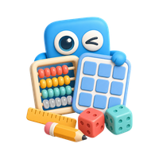
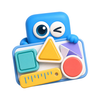

Jogos
Escolha um eixo para começar.


Todos os jogos e ferramentas
Fluência leitora
Leitura de textos
Gêneros textuais
Pop-it da soma
Pop-it da subtração
Tabuada de Pitágoras
Cabo de Guerra
Timer visual
Agenda pedagógica
Como usar a JOJO
Privacidade